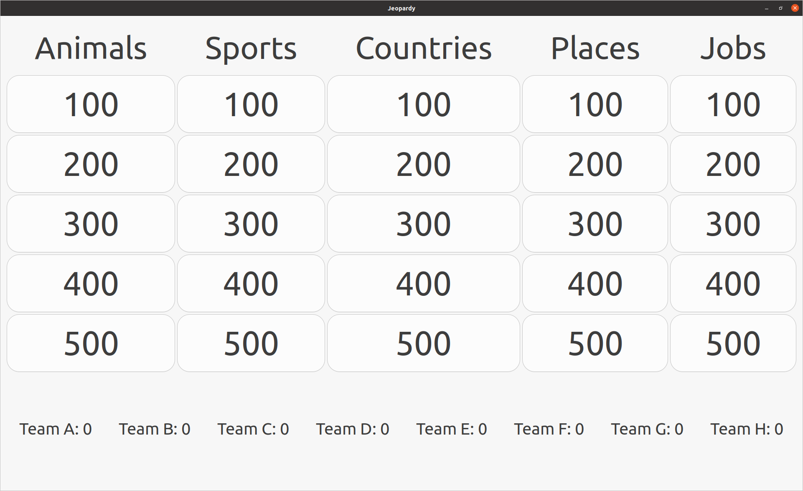
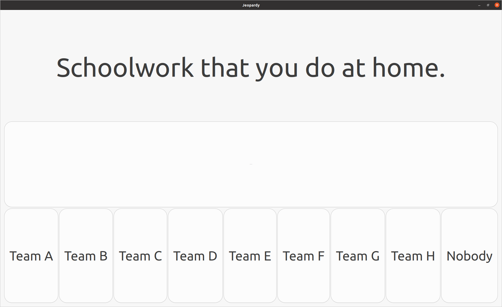
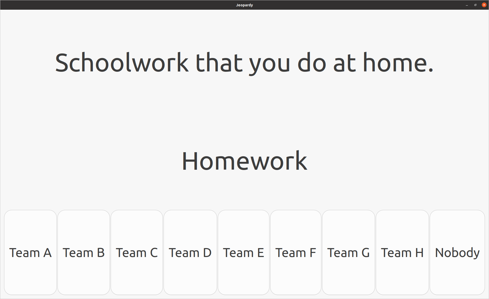
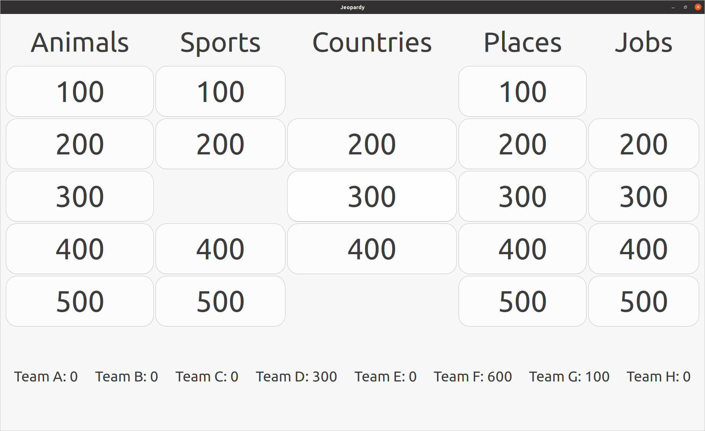

Jeopardy Clone
LINK TO THE SOURCE CODEWhile I was an assistant language teacher in Ibaraki Prefecture, I thought it would be fun to try and work on a personal programming project that could be used in the classroom. The result was a Jeopardy clone. I wrote it in C using the GTK library for the GUI. I would sometimes customize the code to fit the needs of different teachers. For example, I had a version where the questions were pictures instead of sentences, and the answer would be the English word corresponding to the picture. I also made it so questions and answers could be stored and loaded from a JSON file, so they did not need to be hard coded into the source code.
Here is an example of what a new "board" looks like.
When you click on one of the numbers, you are presented with a question like this.
Different teams of students would take turns picking questions from the board and trying to answer them for points. If they failed to answer the question, it remained on the board. The answer could be revealed by clicking the middle button.
When a question is answered correctly by a team, the points are given to that team by clicking the corresponding button at the bottom of the question page, and the game returns to the main board. However, the main board will no longer display the answered question's corresponding button, since teams cannot choose to answer questions that have already been answered correctly. After a few rounds of correct answers, the board will look something like this.
